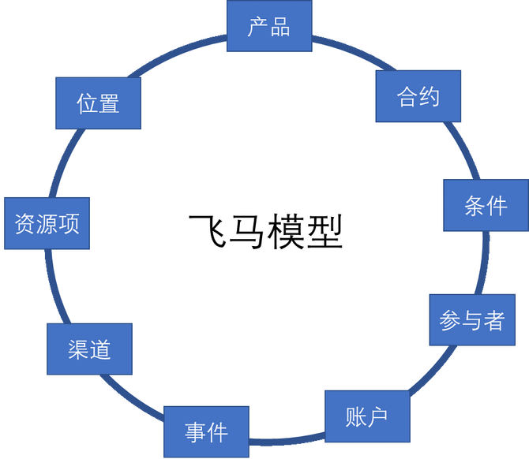
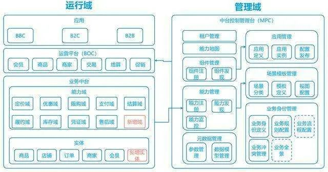
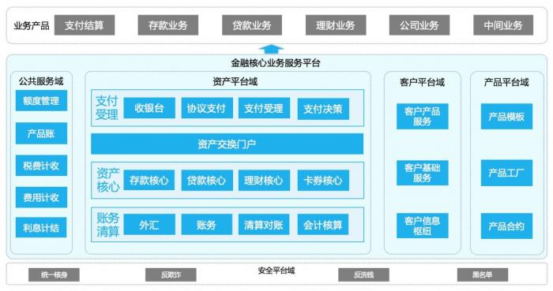

飞马模型
飞马模型来自 IBM 的 FSDM 模型
飞马模型可以覆盖银行、证券和保险业务场景，更加容易实现“全局最优”的金融信息互通、集成标准的建立。
飞马模型包括9类主题：产品、合约、条件、参与者、账户、事件、渠道、资源项、位置 。与FSDM的9大概念（ 参与者、合约、条件、产品、地点/位置、分类、业务方向、事件、资源项）相比，飞马模型少了分类和业务方向，增加了账户和渠道两个主题，更加贴合金融业务特点。

账户的概念来源于会计核算中的会计账户。银行账户是客户在银行开立的存款账户、贷款账户、往来账户的总称。银行业务就是在账户体系基础上为个人和对公客户提供各种金融服务。账户体系定义所有的操作均以交易的形式发生，也就是信息模型中的事件。
渠道是银行为客户提供金融产品和服务的场所。渠道的作用在于触达客户、传递产品和服务、达成交易。对于传统金融机构，同时拥有线下渠道和线上渠道。而对于互联网金融来说，完全是线上渠道。这也决定了互联网金融的业务模式与传统金融机构相比存在较大的差异，渠道对于互联网金融来说意义更大。互联网渠道不仅能够完成触达客户、传递产品和服务、达成交易的基本作用，而且其所带来的全新优质的服务体验，更是通过渠道的客户黏性优势，进而派生新的金融产品或服务，创造了渠道的第四种功能，即产品衍生 。如支付宝最初只是支付渠道，但是凭借其提供的交易担保服务沉淀了用户大量资金，最后走上了货币基金代销之路。
飞马模型不仅是突出了新的概念，还对已有的概念有了新的诠释。产品是银行基于具体需求，向客户提供的一组业务服务的组合。事件是银行根据客户、内部人员的指令或协议约定，通过具体的业务服务即时或定时执行的业务操作行为。
飞马模型的由来
飞马模型并不是凭空出现的，它是网商银行在构建能力打通、组件化、服务化的“共享化敏捷服务中心”的过程中逐步摸索出来的。
网商银行从建设之初就开始服务化、共享化、平台化的过程，通过对应用的系统拆分、微服务化改造、单元化治理，逐渐把单体系统分解到多个服务领域，形成了一整套组件化、可重用的金融能力中心。在这个过程中经过了大量的论证和实践：哪些业务、哪些系统先拆，哪些后拆？上下的层次关系或者左右调用关系是怎么样的？服务粒度怎么确定？在实践过程中，采用了多级域的架构划分方式，每个架构域都是闭环领域，其中又包含了很多系统和组件，各自以服务的形式进行交互、管理数据和分工协作。这样最终形成了有“上帝视角”的互联网金融基础信息模型“ 飞马模型 ”。
飞马模型指导业务中台建设
业务中台建设的方法论
网商银行以“飞马模型”为指导，通过业务抽象、领域建模，建设了自身领域的业务模型、领域模型等，并以服务为中心对外提供统一的标准的数据和服务。业务抽象解决了主要的共性问题，再通过平台配置等方式支持不同业务的个性化内容。


业务中台建设的标准和机制
通过建立业务身份、能力、扩展点等业务领域的概念标准，能力管控、流程编排等系统运行时标准，使大家能互联互通、共享共建，以统一的标准进行需求分析、技术开发和复用。